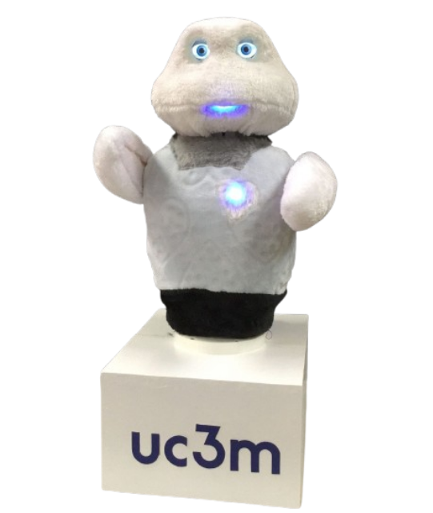
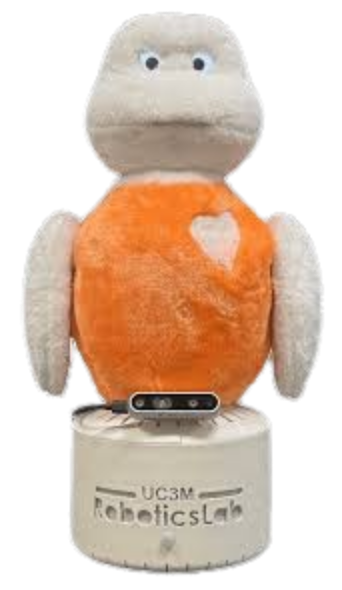
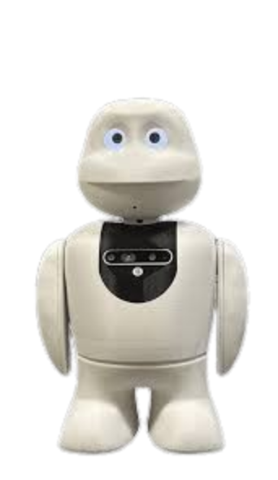

Un experimento de robótica social en la Universidad Carlos III de Madrid para medir el engagement humano-robot.
Conocer al RobotEn un mundo lleno de pantallas y estímulos constantes, captar la atención de un humano de forma natural es un reto complejo. La realidad nos demuestra que un autómata estático es ignorado por los transeúntes, mientras que un robot que se mueve o interactúa de forma diferente puede conseguir llamar la atención.
Objetivo del proyecto: Desarrollar e implementar unas estrategias para captar la atención y valorar la eficiencia de las mismas
Mini es un robot de sobremesa diseñado para ofrecer actividades de estimulación cognitiva, afectiva y física a personas mayores, y fue desarrollada en el Robotics Lab.
El objetivo de los robots sociales de la línea Mini es mejorar la calidad de vida de las personas mayores. En las fotos de abajo puedes ver las diferentes versiones de esta línea, para este experimento se ha utilizado la tercera versión de Mini.



El experimento se basa en la Captología (el estudio de la tecnología persuasiva). El término captology lo acuñó B.J.Fogg un académico de la Universidad de Stanford y es uno de los padres de la robótica social. Este establece que, para que una acción ocurra, deben coincidir tres elementos simultáneamente:
El objetivo final. Queremos lograr el engagement: que el transeúnte se detenga y preste atención al robot.
El deseo de actuar. La estética amigable y no amenazante del robot genera una curiosidad natural en el entorno universitario.
La facilidad de la acción. Girar la cabeza o detenerse un segundo requiere un esfuerzo mínimo, por lo que la capacidad del usuario es máxima.
La chispa proactiva. Aquí reside nuestra ingeniería: mediante visión artificial, el robot detecta a la persona y emite señales cinemáticas (saluda) y sonoras para "despertar" su atención.
Este experimento se centra en El Prompt o el Trugger, en reconocer cuál es método más eficaz para llamar la atención.